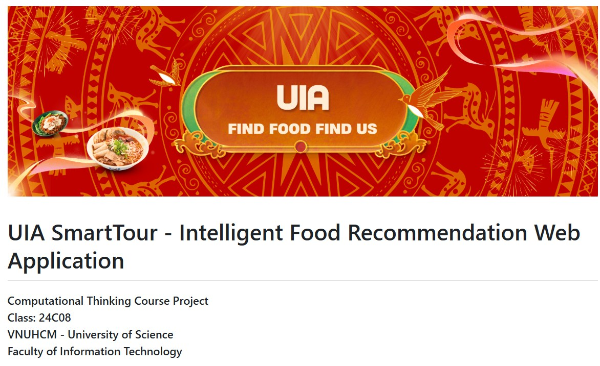
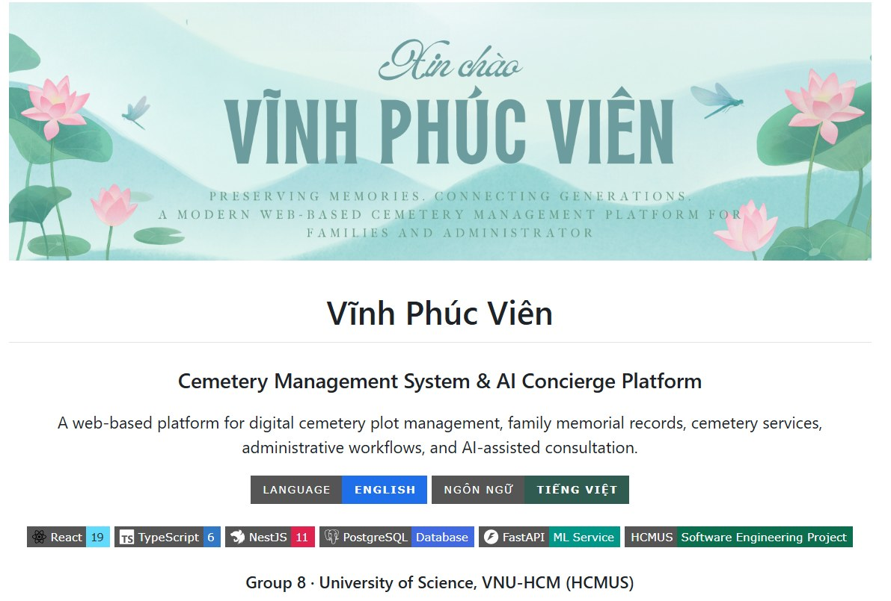
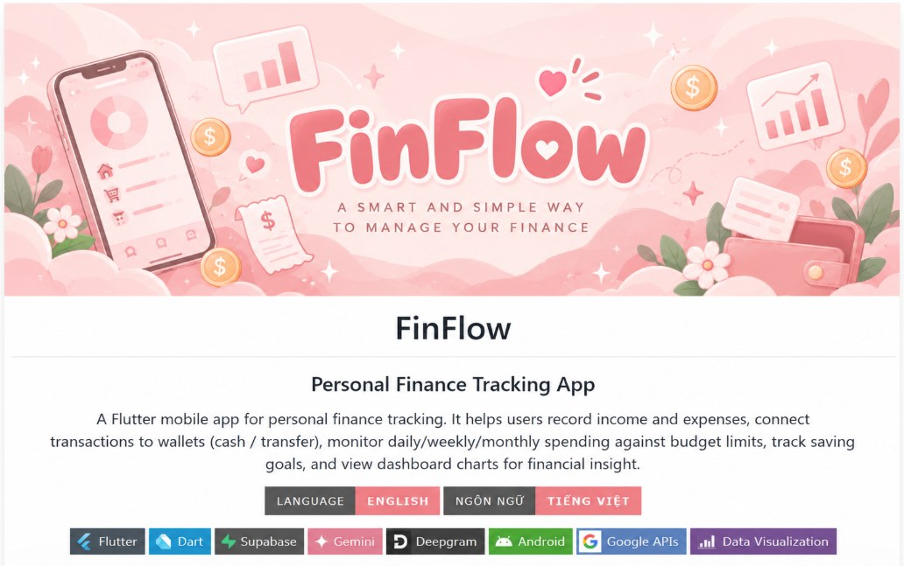

Huỳnh Anh Thư
Kỹ thuật Phần mềm
Xem chi tiếtBa cô, một lon.
Kỹ thuật Phần mềm
Xem chi tiết
Hệ thống thông tin
Xem chi tiết
Kỹ thuật Phần mềm
Xem chi tiếtXin chào, chúng mình là Cá Hộp 3 Cô Gái – Nhóm 4, một team gồm 3 thành viên và hiện đang là sinh viên năm 3. Với những thế mạnh và góc nhìn khác nhau, chúng mình cùng kết hợp kiến thức về công nghệ, phát triển phần mềm và hệ thống để tạo nên những sản phẩm sáng tạo, thực tế và mang dấu ấn riêng của cả nhóm.
Intelligent Food Recommendation Web Application

Xác định bài toán và nhu cầu tìm món ăn
Cả nhómLuồng dùng và giao diện
Cả nhómXây dựng gợi ý và web app
Cả nhómKiểm thử, chỉnh sửa và báo cáo
Cả nhómCemetery Management System & AI Concierge Platform

Khảo sát yêu cầu, quy trình quản trị
Cả nhómKiến trúc hệ thống, cơ sở dữ liệu
Cả nhómFrontend, backend và dịch vụ ML
Cả nhómTích hợp, sửa lỗi, bàn giao
Cả nhómA smart and simple way to manage your finance

Chốt tính năng quản lý thu chi
Cả nhómGiao diện app và luồng người dùng
Cả nhómFlutter, Supabase, tích hợp AI
Cả nhómChạy thử, sửa lỗi, hoàn thiện
Cả nhóm